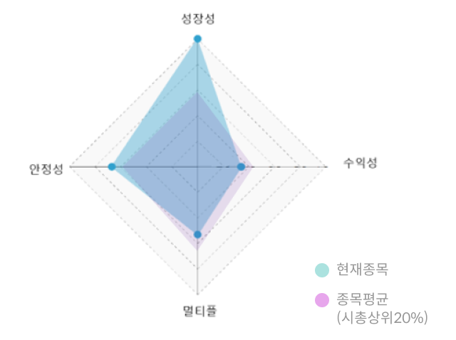

PLTR
Nasdaq
10.48%
시총
(전일종가)
$
1
.426
B
T
M
아연, 금, 은 등의 비철금속 제련 및 판매 기업
#온라인
#해외주식
#2차전지
이 종목, 무슨일이야>
팔란티어테크놀로지 주가는 2025년 1분기 실적 발표에서 상업 매출이 전년 동기 대비 71%, 정부 부문 매출이
45% 급등하는 등 강력한 성장을 보였습니다. S&P 500지수에 편입되며 ETF 자금 유입 효과도 발생했고, 기업과
정부기관의 AI 및 데이터 플랫폼 실전 배치와 대규모 계약 체결이 이어지고 있어 투자 심리가 크게 개선됐습니다.
- AI 평가점수
- 89점

기업의 미래 성장 가능성을 분석할 수 있는 지표입니다.
- 성장성 지표 평균점수
- 89점
- 매출액 증가율
- 89점
0
평균(42)
100
분석요소
최근 3년 분기별 매출액, 전종목 매출액, 종목별 AI분석 가중치
분석요소
기업의 성장률을 판단하는 대표적인 지표.
시가총액 상위20%평균 점수보다 높을수록 고성장이 기대되는 종목으로 평가.
시가총액 상위20%평균 점수보다 높을수록 고성장이 기대되는 종목으로 평가.
- 자기자본 증가율
- 60점
0
평균(42)
100
분석요소
최근 3년 분기별 자기자본 금액, 전종목 자기자본 금액, 종목별 AI분석 가중치
분석요소
기업 고유자산의 증가를 나타내는 지표.
시가총액 상위20%평균 점수보다 높을수록 미래 성장 잠재력이 크다고 평가.
시가총액 상위20%평균 점수보다 높을수록 미래 성장 잠재력이 크다고 평가.
기업의 재무/실적 안정성을 분석할 수 있는 지표입니다.
- 안정성 지표 평균점수
- 89점
- 부채/유동 비율
- 70점
0
평균(42)
100
분석요소
부채총계, 자본총계, 유동자산, 유동부채,AI분석 적정비율값
분석요소
재무 건전성을 분석할때 활용되는 지표.
시가총액 상위20%평균 점수보다 높으면 보다 안정적인 기업으로 평가.
시가총액 상위20%평균 점수보다 높으면 보다 안정적인 기업으로 평가.
- 실적안정성
- 30점
0
평균(42)
100
분석요소
최근 3년 분기별 매출액, 영업이익, 당기순이익 등 실적분석 지표
분석요소
꾸준한 실적은 내는 기업을 평가하는 지표.
시가총액 상위20%평균 점수보다 높을 경우 안정적인 실적을 내는 것으로 평가.
시가총액 상위20%평균 점수보다 높을 경우 안정적인 실적을 내는 것으로 평가.
기업의 영업효율 및 성과를 분석할 수 있는 지표입니다.
- 수익성 지표 평균점수
- 89점
- ROA/ROE
- 45점
0
평균(42)
100
분석요소
최근 2년 분기별 당기순이익, 자산총계, 자본총계, 종목별 AI분석 가중치
분석요소
대표적인 수익성 지표인 ROA와 ROE 결합.
시가총액 상위20%평균 점수보다 높을수록 투자가치와 수익성이 높다고 평가.
시가총액 상위20%평균 점수보다 높을수록 투자가치와 수익성이 높다고 평가.
- 영업이익률
- 15점
0
평균(42)
100
분석요소
최근 2년 분기별 영업이익, 매출액, 종목별 AI분석 가중치
분석요소
기업의 영업활동의 능률을 측정하는 지표.
시가총액 상위20%평균 점수보다 높을 수록 시장대비 수익성이 좋은 것으로 평가.
시가총액 상위20%평균 점수보다 높을 수록 시장대비 수익성이 좋은 것으로 평가.
기업의 미래 가치를 분석할 수 있는 지표입니다.
- 멀티플 지표 평균점수
- 89점
- PER
- 59점
0
평균(42)
100
분석요소
최근 4분기 당기순이익, 주가, 시가총액, 전종목 PER, 종목별 AI분석 가중치
분석요소
기업의 주식가치를 나타내는 대표적인 척도.
시가총액 상위20%평균 점수보다 높을수록 기업 가치가 높은 것으로 평가.
시가총액 상위20%평균 점수보다 높을수록 기업 가치가 높은 것으로 평가.
- PBR
- 39점
0
평균(42)
100
분석요소
최근 4분기 자본총계, 주가, 시가총액, 전종목 PBR, 종목별 AI분석 가중치
분석요소
기업의 재무상태면에서 주가를 판단하는 지표.
시가총액 상위20%평균 점수보다 높을수록 재무구조가 매우 튼튼하다고 평가.
시가총액 상위20%평균 점수보다 높을수록 재무구조가 매우 튼튼하다고 평가.